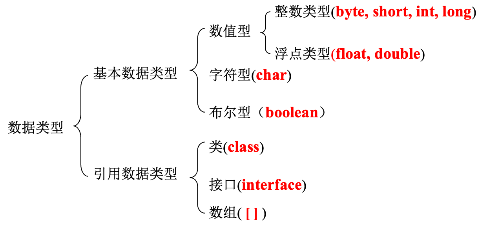
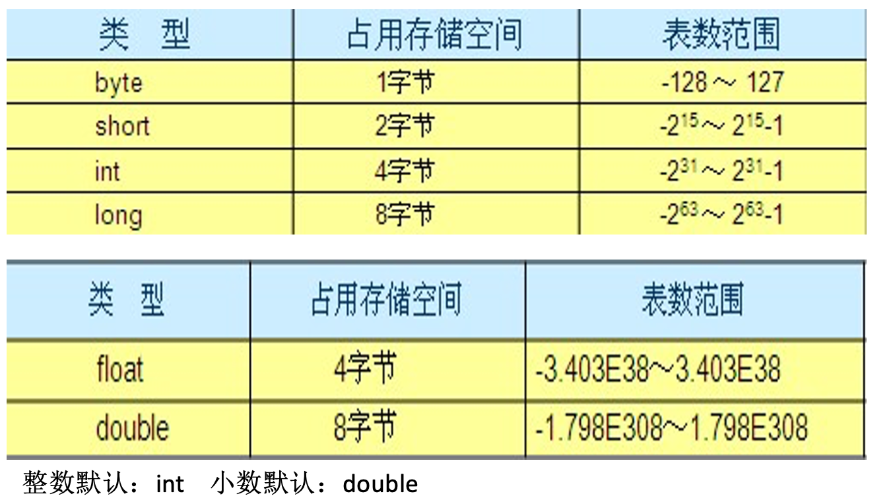
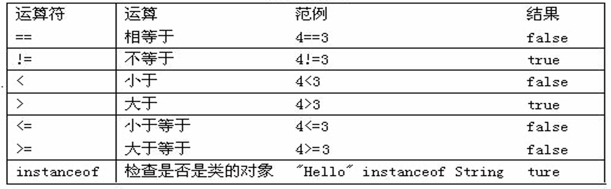

Java速成【基础篇1】
有疑问的点使用：🤔️标注出来了
java特点
简单性
面向对象
健壮性
结构中立
高性能
多线程
动态
安全性
跨平台
- 通过Java语言编写的应用程序在不同的系统平台上都可以运行。
- 只要在需要运行java应用程序的操作系统上，先安装一个Java虚拟机(JVM Java Virtual Machine)即可。由JVM来负责Java程序在该系统中的运行。
JRE & JDK
JRE(Java Runtime Environment Java运行环境)
- JVM+Java程序所需的核心类库+…
JDK(Java Development Kit Java开发工具包)
- java的开发工具（编译工具javac.exe+打包工具jar.exe+…）+JRE
Hello World
写一个java程序，首先定义类。
程序要想能够被jvm调用，必须定义main方法。
程序要想有输出结果，必须用输出语句。
1 | class HelloWorld { |
运行与工作原理

先编写java源代码程序，扩展名.java
在命令行模式中，输入javac命令对源代码进行编译，生成字节码文件
javac 源文件名.java
编译完成后，如果没有报错信息，输入java命令对class字节码文件进行解释运行,执行时不需要添加.class扩展名
java HelloWorld
基础语法
关键字


组成关键字的字母全部小写
goto和const作为保留字存在,目前并不使用
标识符
给类,接口,方法,变量等起名字时使用的字符序列
组成规则
英文大小写字母
数字字符
$和_
注意事项
不能以数字开头
不能是Java中的关键字
区分大小写
注释
单行注释
- 格式： //注释文字
多行注释
- 格式： /* 注释文字 */
文档注释
- 格式：/** 注释文字 */
常量、进制、进制转换及符号数
常量
在程序执行的过程中其值不可以发生改变
Java中常量分类
字面值常量
字符串常量: 用双引号括起来的内容
整数常量: 所有整数
12,23小数常量: 所有小数·
12.34,56.78字符常量:用单引号括起来的内容·
'a'，'A'，'0'布尔常量:
true和false空常量:
null(数组部分讲解)
自定义常量(面向对象部分讲)
进制
二进制
- 由0,1组成。以0b开头
八进制
- 由0,1,…7组成。以0开头
十进制
- 由0,1,…9组成。整数默认是十进制的
十六进制
- 由0,1,…9,a,b,c,d,e,f(大小写均可)。以0x开头
进制转换
其他进制到十进制
十进制到其他进制
符号数表示法-原码 反码 补码
所有数据的运算都是采用补码进行的。
原码
- 就是二进制定点表示法，即最高位为符号位，“0”表示正，“1”表示负，其余位表示数值的大小。
反码
- 正数的反码与其原码相同；负数的反码是对其原码逐位取反，但符号位除外。
补码
- 正数的补码与其原码相同；负数的补码是在其反码的末位加1。
变量
在程序执行的过程中，在某个范围内其值可以发生改变的量，如同数学中的未知数
- 变量定义格式
- 数据类型 变量名 = 初始化值;
- 数据类型 变量名;
变量名 = 初始化值;
数据类型和类型转换
 Java是强类型语言，对于每一种数据都定义了明确的具体数据类型，在内存总分配了不同大小的内存空间
注意事项
作用域
- 变量定义在哪一级大括号中，哪个大括号的范围就是这个变量的作用域。相同的作用域中不能定义两个同名变量。
初始化值
- 没有初始化值不能直接使用
在一行上建议只定义一个变量
- 可以定义多个，但是不建议
boolean类型不能转换为其他的数据类型
隐式转换
- byte,short,char—int—long—float—double
- byte,short,char相互之间补转换，他们参与运算首先转换为int类型
强制转换
- 目标类型 变量名=(目标类型)(被转换的数据);
思考练习
写出结果
1
2
3
4
5
6System.out.println('a');//a
System.out.println('a'+1);//a1
System.out.println("hello"+'a'+1);//helloa1
System.out.println('a'+1+"hello");//a1hello
System.out.println("5+5="+5+5);//5+5=55
System.out.println(5+5+"=5+5");//10=5+5
运算符
算术运算符
+,-,*,/,%,++,–
参与操作使用：
- 放在数据的前面，先数据变化，再参与运算。
- 放在数据的后面，先参与运算，再数据变化。
%和/的区别
- %：余数
- %的结果的符号和前面的那个数一致。
- /：商
- 整数相除，结果是整数。想得到小数，可以乘以或者除以1.0
- %：余数
赋值运算符
= , +=, -=, *=, /=, %=
练习：short s=1, s = s+1; short s=1, s+=1;（有没有问题，如果有，哪里有问题）🤔️
比较运算符
逻辑运算符
&:有false则false
|:有true则true
^:相同false，不同true(情侣关系)(交换两个变量的值的四种方式)
!:偶数个，值不变；奇数个，值相反。
“&”和“&&”的区别：
单&时，左边无论真假，右边都进行运算；
双&时，如果左边为真，右边参与运算，如果左边为假，那么右边不参与运算。
“|”和“||”的区别同理，双或时，左边为真，右边不参与运算。
异或( ^ )与或( | )的不同之处是：当左右都为true时，结果为false。
位运算符
位运算是直接对二进制进行运算。
^的特点：(掌握)
针对同一个数据异或两次，值不变。
1
2
3a = a ^ b;
b = a ^ b;
a = a ^ b;
三目运算符
(关系表达式)?表达式true1：表达式false2；
练习：获取两个数中大数。
- int x=3,y=4,z; z = (x>y)?x:y; //z变量存储的就是两个数的大数。
运算符的优先级（从高到低）
| 优先级 | 描述 | 运算符 |
|---|---|---|
| 1 | 括号 | ()、[] |
| 2 | 正负号 | +、- |
| 3 | 自增自减，非 | ++、–、! |
| 4 | 乘除，取余 | *、/、% |
| 5 | 加减 | +、- |
| 6 | 移位运算 | <<、>>、>>> |
| 7 | 大小关系 | >、>=、<、<= |
| 8 | 相等关系 | ==、!= |
| 9 | 按位与 | & |
| 10 | 按位异或 | ^ |
| 11 | 按位或 | | |
| 12 | 逻辑与 | && |
| 13 | 逻辑或 | || |
| 14 | 条件运算 | ?: |
| 15 | 赋值运算 | =、+=、-=、*=、/=、%= |
| 16 | 位赋值运算 | &=、|=、<<=、>>=、>>>= |
语句
键盘输入
导包(位置放到class定义的上面)
- import java.util.Scanner;
创建对象
- Scanner sc = new Scanner(System.in);
接收数据
- int x = sc.nextInt();
流程控制
顺序结构
选择结构
if语句
针对结果是boolean类型的判断;针对一个范围的判断;针对几个常量值的判断
```java
if(关系表达式) {语句体}
1
2
3
4
5
6
7
- ```java
if(关系表达式) {
语句体1;
}else {
语句体2;
}```java
if(关系表达式1) {
语句体1;
}else if (关系表达式2) {
语句体2;
}…
else {
语句体n+1;
}1
2
3
4
5
6
7
8
9
10
11
12
13
14
15
16
17
18
19
20
- switch语句
- 针对几个常量值的判断
- case后面只能是常量，不能是变量
- ```java
switch(表达式) {
case 值1：
语句体1;
break;
case 值2：
语句体2;
break;
…
default：
语句体n+1;
break;
}
循环结构
组成
初始化语句
判断条件语句
循环体语句：
控制条件语句：
for语句
只有在条件成立的时候才会去执行循环体
控制条件语句所控制的那个变量，在for循环结束后就不能再被访问到了,该变量就从内存中消失，提高内存的使用效率。
```java
for(初始化语句;判断条件语句;控制条件语句) {
循环体语句;
}1
2
3
4
5
6
7
8
9
10
11
- while语句
- 只有在条件成立的时候才会去执行循环体
- 控制条件语句所控制的那个变量，在for循环结束后还可以继续使用.
- ```java
while(判断条件语句) {
循环体语句;
}```java
初始化语句;
while(判断条件语句) {
循环体语句;
控制条件语句;
}1
2
3
4
5
6
7
8
9
- do…while
- 至少会执行一次循环体。
- ```java
do {
循环体语句;
}while((判断条件语句);```java
初始化语句;
do {
循环体语句;
控制条件语句;
} while((判断条件语句);1
2
3
4
5
6
7
8
9
10
11
12
13
14
15
16
17
18
19
20
21
22
23
24
25
26
27
28
29
30
31
32
33
34
- 循环结构(循环嵌套使用)
- 跳转控制语句
- break
- 跳出单层循环
- 跳出多层循环
- 带标签的跳出
- 格式：标签名: 循环语句 //标签名要符合Java的命名规则
- continue
- break 退出当前循环,continue 退出本次循环
- return
- 退出一个方法
## 方法
> 方法就是完成特定功能的代码块
### 格式
```java
修饰符 返回值类型 方法名(参数类型 参数名1，参数类型 参数名2…) {
函数体;
return 返回值;
}
注意
方法不调用不执行
方法与方法是平级关系，不能嵌套定义
方法定义的时候参数之间用逗号隔开
方法调用的时候不用在传递数据类型
如果方法有明确的返回值，一定要有return带回一个值
方法重载
- 在同一个类中，方法名相同，参数列表不同的方法。
- 参数列表不同：个数不同，数据类型不同
- 与返回值类型无关。
- 练习：
A:判断哪些和给定的方法是方法重载 B:写4个比较数据是否相等的方法 byte,byte short,short int,int long,long
数组
一维数组
数组:存储同一种数据类型的多个元素的集合
- 每个元素都有编号，从0开始。
- 最大编号是数组的长度-1
数组的格式：
- 数据类型[] 数组名;
- 数据类型 数组名[];
数组的初始化(先初始化,然后才能使用)：
- 动态初始化 只给长度，不给元素
int[] arr = new int[3]; - 静态初始化 不给长度，给元素
int[] arr = new int[]{1,2,3}; 简化版：int[] arr = {1,2,3};
- 动态初始化 只给长度，不给元素
java中的内存分配
- 栈 存储局部变量
- 堆 new出来的
- 方法区
- 本地方法区
- 寄存器
两个常见小问题
- 数组越界
- ArrayIndexOutOfBoundsException
- 访问到了数组中的不存在的索引时发生。
- 空指针异常
- NullPointerException
- 数组引用没有指向实体，却在操作实体中的元素时。
- 数组越界
数组常见操作
- 获取数组长度：数组名.length
- 数组遍历
- 获取最值
- 数组反转
- 查表法
- 查找指定元素第一次出现的索引
二维数组
元素是一维数组的数组。
- 格式
数据类型[][] 变量名 = new 数据类型[m][n];数据类型[][] 变量名 = new 数据类型[m][];数据类型[][] 变量名 = new 数据类型[][]{{元素...},{元素...},{元素...}};数据类型[][] 变量名 = {{元素...},{元素...},{元素...}};
- 常见操作：
- 数组遍历
- 求和案例